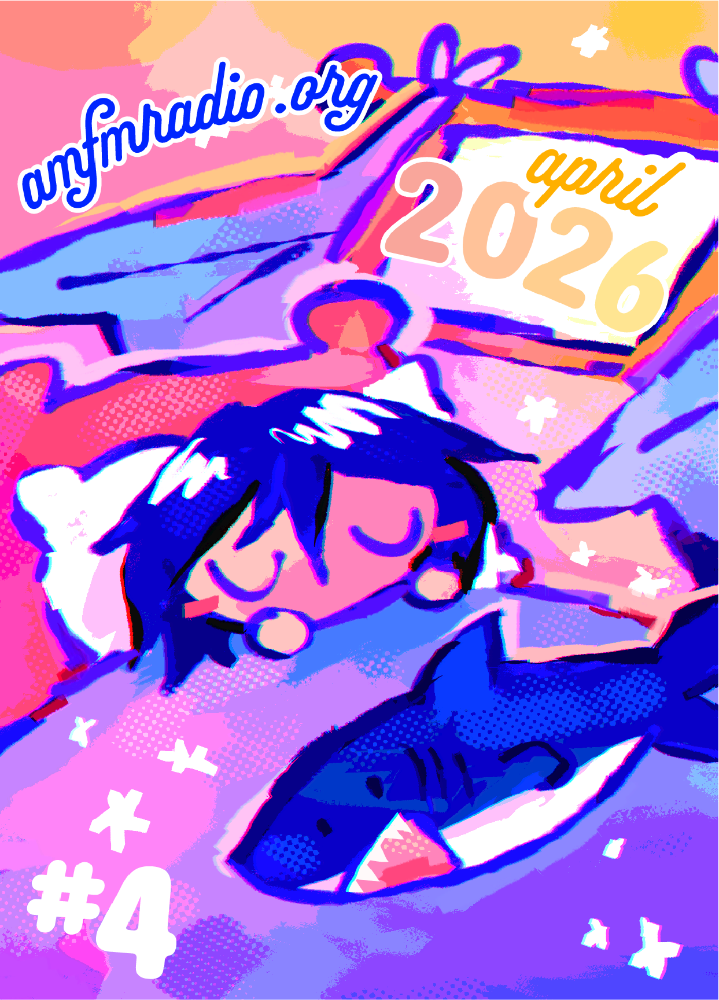
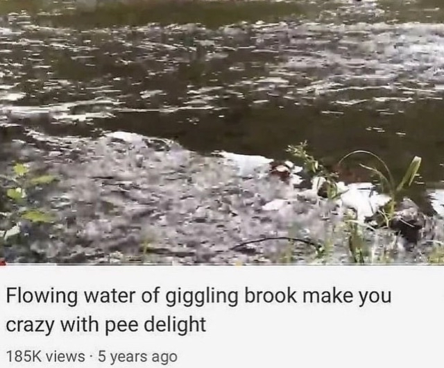

[2026/05/07]
April 2026

Hi! Sorry!! I’m a week late to posting the April blogpost!!! I have a bunch of excuses, such as “I keep being forced to do shit I don’t want to do”, and “work is killing me so bad that I switched to part-time to have more time to work on my own projects”, and “there’s just too much to do and too little time”, and, “my period made me hunched over the toilet dry heaving and bedridden”, and “wow, Tomodachi Life is really fun”, and, well, you get the idea.
An update on the site. Very steady progress is being made on the site renovation so far! I had to spend days reading multiple tutorials and watching multiple videos on how grids and divs work, but the effort paid off and it’s been a huge help in optimizing my website for multiple window widths and even mobile screens, so I’m happy. The whole process is taking me a while to do since I have to rearrange a bunch of content and constantly check to make sure text is in place and elements are where they should be, but if I continue at the current rate I’m working right now, I should be able to release the update in 2 weeks. I’m excited!
I think I’m quite happy with my coding skills recently… It's obviously nothing crazy but looking back at the very first iteration of my website, I’ve come a long way, and considering how I’m entirely self-taught on this topic I think it’s fine for me to be at least a little proud of myself…
Outside of coding I’ve been doodling on paper a lot the past few months. I don’t really touch my computer enough to draw on it anymore unless I really need to. I’m not sure why. I always think about drawing digitally and wanting to do it but I never do. I think I’m slowly becoming allergic to looking at screens at this point. Anyway I finished another sketchbook; I just need to upload it now that I've finished scanning and editing it. My next sketchbook is about 100 sheets big, so it will take me a very long time to finish it…
Not much else to write about. I’ve been out of my mind busy the past few weeks over things I don’t care enough to write about. Now I’m just tired and I have a headache all the time. I would stretch this blogpost out to more than a thousand words, but I honestly can’t find it in myself to do that. Maybe next time.

I'd ask
Aidan to beta this for me and help me edit like he usually does, but it's so short that I don't think it should be bothered. His
newest blog about Splatoon Raiders is making me really want to use up my savings to buy a Switch 2... I's such a terrible financial decision... but I like gaming with my friends... What to do...
EDIT: A day later and I finally released amfmradio.org V2! I wrote more
here :)